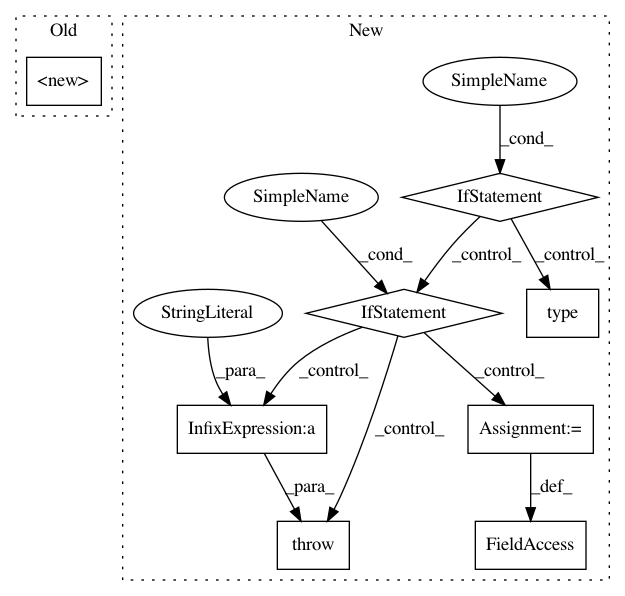

9a76bb5272c3f8662b266410c0c5b0dbce3ec025,open_seq2seq/parts/rnns/attention_wrapper.py,LocationSensitiveAttention,__init__,#LocationSensitiveAttention#Any#Any#Any#Any#Any#Any#Any#Any#Any#,716
Before Change
if dtype is None:
dtype = dtypes.float32
wrapped_probability_fn = lambda score, _: probability_fn(score)
super(LocationSensitiveAttention, self).__init__(
query_layer=layers_core.Dense(
num_units, name="query_layer", use_bias=False, dtype=dtype
),
memory_layer=layers_core.Dense(
num_units, name="memory_layer", use_bias=False, dtype=dtype
),
memory=memory,
probability_fn=wrapped_probability_fn,
memory_sequence_length=memory_sequence_length,
score_mask_value=score_mask_value,
name=name
)
self.location_layer = LocationLayer(32, 32, num_units)
self._num_units = num_units
self._name = name
self.use_bias = use_bias
After Change
A (possibly masked), checked, new `memory`.
Raises:
ValueError: If `check_inner_dims_defined` is `True` and not
`memory.shape[2:].is_fully_defined()`.
memory = nest.map_structure(
lambda m: ops.convert_to_tensor(m, name="memory"), memory
)
if memory_sequence_length is not None:
memory_sequence_length = ops.convert_to_tensor(
memory_sequence_length, name="memory_sequence_length"
)
if check_inner_dims_defined:
def _check_dims(m):
if not m.get_shape()[2:].is_fully_defined():
raise ValueError(
"Expected memory %s to have fully defined inner dims, "
"but saw shape: %s" % (m.name, m.get_shape())
)
nest.map_structure(_check_dims, memory)
if memory_sequence_length is None:
seq_len_mask = None
else:
seq_len_mask = array_ops.sequence_mask(
memory_sequence_length,
maxlen=array_ops.shape(nest.flatten(memory)[0])[1],
dtype=nest.flatten(memory)[0].dtype
In pattern: SUPERPATTERN
Frequency: 3
Non-data size: 8
Instances
Project Name: NVIDIA/OpenSeq2Seq
Commit Name: 9a76bb5272c3f8662b266410c0c5b0dbce3ec025
Time: 2018-08-20
Author: jasoli@nvidia.com
File Name: open_seq2seq/parts/rnns/attention_wrapper.py
Class Name: LocationSensitiveAttention
Method Name: __init__
Project Name: IBM/adversarial-robustness-toolbox
Commit Name: f5760b43ca0f5fe11fdafe803e9be54fc56d0da6
Time: 2018-11-28
Author: ambrish.rawat@ie.ibm.com
File Name: art/detection/features.py
Class Name: MeanClassDist
Method Name: __init__
Project Name: IBM/adversarial-robustness-toolbox
Commit Name: f5760b43ca0f5fe11fdafe803e9be54fc56d0da6
Time: 2018-11-28
Author: ambrish.rawat@ie.ibm.com
File Name: art/detection/features.py
Class Name: KNNPreds
Method Name: __init__